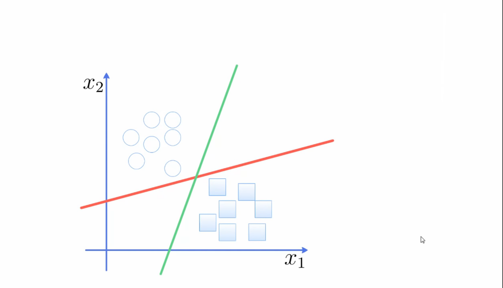
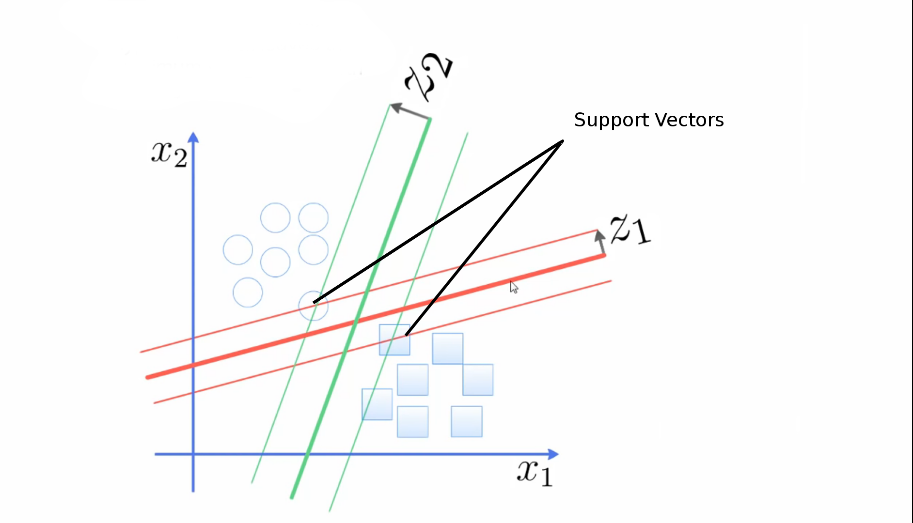
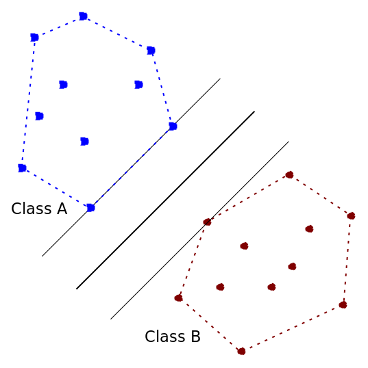
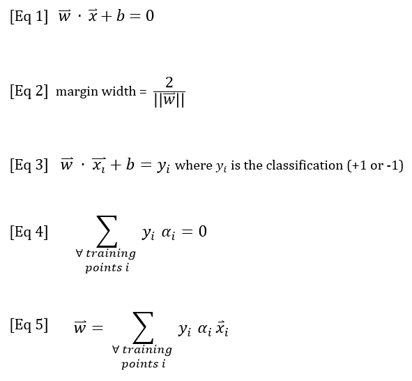

Support Vector Machines (SVM) Algorithms
Created for
Created by
2018 - 2021,

Overview of Support Vector Machines
Overview of Support Vector Machines
- Support Vector Machine (SMV) is a numerical binary classifier
- Separates the classes by single decision boundary
- The goal is to maximize the margin between positive and negative classes
Applications
- SVMs are helpful in text and hypertext categorization as their application can significantly reduce the need for labeled training instances.
- Classification of images can also be performed using SVMs. Experimental results show that SVMs achieve significantly higher search accuracy than traditional query refinement schemes after just three to four rounds of relevance feedback.
- Hand-written characters can be recognized using SVM
Basic concepts
Basic concepts
Probem: find the best decision boundary
{kind=link}
Solution: overview
{kind=link}
we choose the line so that the distance from it to the nearest data point on each side (support vectors) is maximized.
How many support vectors?
- In 1-D space the boundary is a single dot
- We need only two dots for support vectors
- In 2-D space the boundary is a line
- Only 2 or 3 support vectors are needed
- If there are 2 point across each other - then we need only these 2 points and the boundary will be the perpendicular bisector.
- In 3-D space the boundary is a plane
How many support vectors - the Convex Hull Method?
{kind=link}
Two sets are linearly separable if and only if their convex hulls don’t intersect
What is the Convex Hull Method?

- The Convex hull method helps to intuitively find the best boundary.
- The Convex hull is a shape that doesn't have any concavities
- Convex hull
Support Vector Machine Algorithm Overview
SVM Algorithm Overview
{kind=link}
Calculate the best boundary
A trained SVM is defined by two values:
- $\overrightarrow{w}$ is a normal vector, which is perpendicular to the boundary
- It solely determines the shape and direction of the decision boundary.
- $b$ (in other notations: $w_{0}$) is a number, representing an offset
- determines the position of the decision boundary with respect to the origin
Calculate the best boundary
- Draw a boundary line
- Write the equation of the boundary $f(x) = y$
- Re-write the equation the $\overrightarrow{w}$ and $b$
- $\overrightarrow{w} . \overrightarrow{x} + b = 0$
- Margin width = $\dfrac{2}{||w||}$
- $||w||$ have to point toward the positive class!
- we need the smallest $w$ in order to maximize the margin
- Reference: Math behind SVM @medium.com
Calculate the best boundary
{kind=link}

Calssification
- $class(\overrightarrow{x}) = sign(\overrightarrow{w} . \overrightarrow{x} + b)$
Kernel Function
- By Kernel function we can extend SVM algorithm to patterns that are not linearly separable by transformations of original data to map into new space

SVM in Scikit-learn

Parameters - Kernel
- Specify how to transform the given input data into the required form.
- Kernel types: linear, polynomial, and radial basis function (RBF).
- In sklearn.svm.SVC the values are: ‘linear’, ‘poly’, ‘rbf’, ‘sigmoid’, ‘precomputed’ or a callable. If none is given, ‘rbf’ will be used. If a callable is given it is used to pre-compute the kernel matrix from data matrices; that matrix should be an array of shape (n_samples, n_samples).
Parameters - C parameter
- The C parameter (penalty parameter) is used to maintain regularization
- C parameter represent the cost of misclassification
- Large C value makes the cost of misclassification high (known as "hard margin"), which results in small margin.
- A large C gives us low bias and high variance
- A large value of C basically tells our model that we do not have that much faith in our data’s distribution, and will only consider points close to line of separation.
- A small value of C includes more/all the observations, allowing the margins to be calculated using all the data in the area.
Parameters - Gamma
- A lower value of Gamma will loosely fit the training dataset
- A higher value of gamma will exactly fit the training dataset, which causes over-fitting.
More reading: What are C and gamma with regards to a support vector machine
Examples
Pros and cons of SVM
Pros and cons of SVM
Pros
- Effective in high dimensional spaces.
- Still effective in cases where number of dimensions is greater than the number of samples.
- Uses a subset of training points in the decision function (called support vectors), so it is also memefficient.
- Versatile: different Kernel functions can be specified for the decision function. Common kernels are provided, but it is also possible to specify custom kernels.
- Higher speed and better performance with a limited number of samples (in the thousands) compared to neural networks
Cons
- If the number of features is much greater than the number of samples, avoid over-fitting in choosing Kernel functions and regularization term is crucial.
- SVMs do not directly provide probability estimates, these are calculated using an expensive five-fold cross-validation
References
References
Readings
- Basics of support vector machines by Cristian Dima
These slides are based on
customised version of
framework